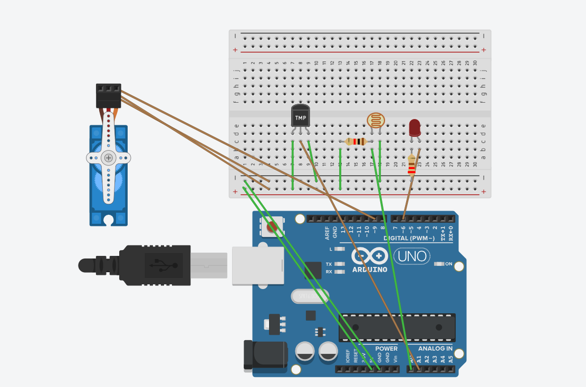

Temperatuuritundlik servojuhtimine, mis töötab koos ühe LED-fotoresistori ja temperatuuritakistiga. Servo pöörleb vastupäeva, kui temperatuur on väiksem või võrdne 20°C (kasvuhoone aken suletakse), ja kui temperatuur on suurem või võrdne 30°C, liigub see päripäeva (aken avatakse, et jahutada). LED töötab, kui on pime, ja valges lülitub välja.

#include <Servo.h>
const int tempPin = A1; // TMP36
const int ldrPin = A0; // Fototakisti
const int ledPin = 6; // LED
const int servoPin = 9; // Servo
Servo windowServo;
int currentAngle = 0; // praegune servo nurk
void setup() {
Serial.begin(9600);
windowServo.attach(servoPin);
pinMode(ledPin, OUTPUT);
}
void loop() {
// ---------- Temperatuur ----------
int tempReading = analogRead(tempPin);
float voltage = tempReading * (5.0 / 1023.0);
float temperatureC = (voltage - 0.5) * 100.0;
// ---------- Servo juhtimine ----------
int targetAngle;
if (temperatureC <= 20) {
targetAngle = 0; // Sulge aken
} else if (temperatureC >= 30) {
targetAngle = 180; // Ava aken
} else {
// Proportsionaalne nurk temperatuuril 20 ja 30 vahel
targetAngle = map(temperatureC, 20, 30, 0, 180);
}
// Sujuv servo liikumine
if (currentAngle < targetAngle) {
currentAngle++;
} else if (currentAngle > targetAngle) {
currentAngle--;
}
windowServo.write(currentAngle);
delay(15); // servo kiirus
// ---------- Valgustus ----------
int ldrValue = analogRead(ldrPin); // Fototakisti (valge/pime)
int threshold = 500;
if (ldrValue < threshold) {
digitalWrite(ledPin, HIGH); // Lülita sisse
} else {
digitalWrite(ledPin, LOW); // Lülita välja
}
// ---------- Monitori väljund ----------
Serial.print("Temp: ");
Serial.print(temperatureC);
Serial.print(" °C\tLight: ");
Serial.println(ldrValue);
}